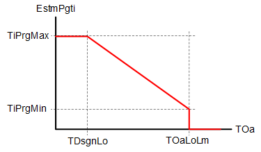
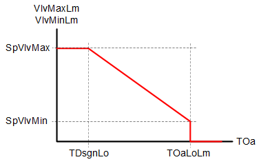

[PURGE] 清除优化
功能块 PURGE 可保护加热线圈在外部温度较低的通风设备启动时免于冻结。
当启动设备时，闭环控制无法足够快地保护热交换器免于冻结。热交换器必须预热以确保保护。
PURGE 控制设备启动时加热盘管的阀门位置和混合空气风门的位置。
PURGE 可以使用各种植物类型，并与水或蒸汽一起使用。
Start purge optimization
当满足以下条件时，清除优化开始：
- The plant is started ([EnFnct] = 1).
- The plant was switched off for at least the minimum switch-off time [TiOffMin] ([EnFnct] = 0 for at least [TiOffMin]).
- The outside temperature [TOa] is lower than the low limit for outside temperature [TOaLoLm].
Calculate purge time
预计净化时间 [EstmPgti] 是根据外部温度 [TOa] 和特性按照以下设置值计算得出的：
- Maximum purge time [TiPrgMax]
- Minimum purge time [TiPrgMin]
- Design temperature low [TDsgnLo]
- Lower limit for outside air temperature [TOaLoLm]

Calculate valve position
吹扫期间最大阀位 [VlvMaxLm] 和最小阀位 [VlvMinLm] 的设定值根据外部温度 [TOa] 和特性按照以下设置值进行计算：
- Setpoint for maximum valve position [SpVlvMax]
- Setpoint for minimum valve position [SpVlvMin]
- Design temperature low [TDsgnLo]
- Lower limit for outside air temperature [TOaLoLm]

吹扫期间，最大阀位 [VlvMaxLm] 和最小阀位 [VlvMinLm] 设置为相同值。
最大阀门位置 [VlvMaxLm] 和最小阀门位置 [VlvMinLm] 在吹扫之前和之后不同。
[TOa] = [TDsgnLo] 的示例：

Vlv = 阀门位置
Example for [TOa] = [TOaLoLm]:

Vlv = 阀门位置
在主动吹扫优化期间，最大阀门位置发送至输出 [VlvMaxLm]，最小阀门位置发送至输出 [VlvMinLm]。
Purge function process
- The purge function starts by switching on the plant, i.e. [EnFnct] = 1. An active purge function is displayed at output [Prg] with value 1.
- During purge, the outputs for the maximum valve position [VlvMaxLm] and the minimum position [VlvMinLm] are set to the calculated value. The valve moves to the corresponding position and the heating coil starts to heat. Output [VlvLmd] indicates that the damper position is limited by the purge function.
- In addition, output [DmpMaxLm] is set to 0 [%] and the air damper is thus closed. Output [DmpClsd] indicates that the damper position is maintained in the closed position by the purge function.
- After the calculated purge time expires, the maximum permissible valve position [VlvMaxLm] is set to 100 [%]. The minimum valve position [VlvMinLm] is set to the setpoint at the end of the purge time [SpVlvPrg], unless the present value from [VlvMinLm] is less than [SpVlvPrg].
- If external logic determines that the heating coil is sufficiently warm prior to the end of the purge time, the purge time can be concluded early over input [CnclPrg].
- After the calculated purge time expires, the valve is deployed to the minimum valve position [VlvMinLm]. The time for closing is based on the valve close time set on input [TiClsVlv]. While closing, the output [VlvLmd] indicates that the valve position is limited by the purge function.
- The delay [DlyOpnDmp] starts as soon as the minimum valve position [VlvMinLm] reaches 0 [%].
- The air damper may only start to open after the delay expires. The time to open the air damper is based on the opening time for the air damper set at input [TiOpnDmp]. While opening, output [DmpLmd] indicates that the damper position is limited by the purge function.
- The minimum switch-off time off [TiOffMin] restarts if the plant is switched off ([EnFnct] = 0). If the plant is switched on again within in this time, the purge function does not start, since the heating coil is sufficiently warm and therefore protected against freezing.

Vlv = 阀门位置
Dmp = 阻尼器位置
Cancel purge function
清除功能在以下情况下被取消：
- The plant is switched off ([EnFnct] = 0).
- If the outside temperature [TOa] exceeds the low limit for outside temperature [TOaLoLm].
取消后，仅当设备重新启动 ([EnFnct] = 1) 时，吹扫功能才会打开。
输入 | 描述 | 数据类型 | 默认值 |
|---|---|---|---|
EnFnct | Enable function 启用该功能。 | 布尔值 | 0 |
0 - 该功能未启用。 | |||
TOa | Outside air temperature 室外气温的实际值。 | 真实的 | 0 [°C] |
TiPrgMax
| Maximum purge time 最长吹扫时间 | 时间 | 300 [s] |
TiPrgMin | Minimum purge time 最短吹扫持续时间 | 时间 | 30 [s] |
TDsgnLo | 较低的设计温度。 降低通风设备的设计温度 | 真实的 | -15.0 [°C] |
TOaLoLm | Low limit for outside air temperature 降低通风设备的设计温度 如果 [TOa] > [TOaLoLm]，则不会开始清除。 | 真实的 | 9.0 [°C] |
SpVlvMax | Setpoint for maximum valve position 吹扫期间最大阀门位置 | 真实的 | 100.0 [%] |
SpVlvMin | Setpoint for minimum valve position 吹扫期间的最小阀门位置 | 真实的 | 30.0 [%] |
TiOffMin | Min.switch-off time 重新启动前的最短关闭时间 | 时间 | 900 [s] |
为了在启动设备时开始吹扫，在此期间必须至少关闭设备。否则，加热线圈足够热。 | |||
TiClsVlv | Closing time for valve 关闭阀门从 [SpVlvMax] 到 0 [%] 的时间 | 时间 | 150 [s] |
SpVlvPrg | Valve setpoint at end of purge 完成吹扫过程后阀门位置的设定值。 | 真实的 | 100 [%] |
DlyOpnDmp | Delay before opening damper [VlvMinLm] 缩回到 0 [%] 后，延迟 [DlyOpnDmp] 必须到期，空气挡板才允许打开。 | 时间 | 30 [s] |
TiOpnDmp | Opening time for damper 风门从 0 [%] 到 100 [%] 打开的时间 | 时间 | 60 [s]
|
CnclPrg | Cancel purge 从外部逻辑传输信息，表明净化的预期效果比预期更早达到了。 | 布尔值 | 0 |
0 - 清除运行正常。 | |||
输出 | 描述 | 数据类型 | 默认值 |
|---|---|---|---|
VlvMaxLm | 阀门最大开度 吹扫期间阀门最大开度 | 真实的 | 100.0 [%] |
VlvMinLm | 最小阀门开度 吹扫期间最小阀门开度 | 真实的 | 0.0 [%] |
DmpMaxLm | 风门最大开度 风门最大开度 | 真实的 | 100.0 [%] |
Prg | Purge 指示清除是否处于活动状态。 | 布尔值 | 0 |
0 - 清除功能未激活。 | |||
VlvLmd | Valve position limited 指示阀门位置是否受到吹扫功能的限制。 | 布尔值 | 1 |
0 - 限制激活。 | |||
DmpClsd | Damper closed 表示吹扫功能要求风门关闭。 | 布尔值 | 1 |
SOL___VAR_000__ 计算日出 [Sunrise] 和日落 [Sunset] 并将这些值提供给输出。 | |||
DmpLmd | Damper position limited 指示风门位置当前是否受到净化功能的限制。 | 布尔值 | 1 |
0 - 阻尼器位置限制激活。 | |||
EstmPgti | Estimated purge time 指示根据输入 [TOa]、[TOaLoLm]、[TDsgnLo]、[TiPrgMax] 和 [TiPrgMin] 的值计算的估计净化时间。 | 时间 | 0 ms |
|
SysUnits | System of units 表示system of units由块使用。 | 整数 | 1: International system of units (SI) (fallback) 1...5 |
1: International system of units (SI) (fallback) | |||
ErrCode | Error code indication | 整数 | 0: No error |
= 0 - No error | |||